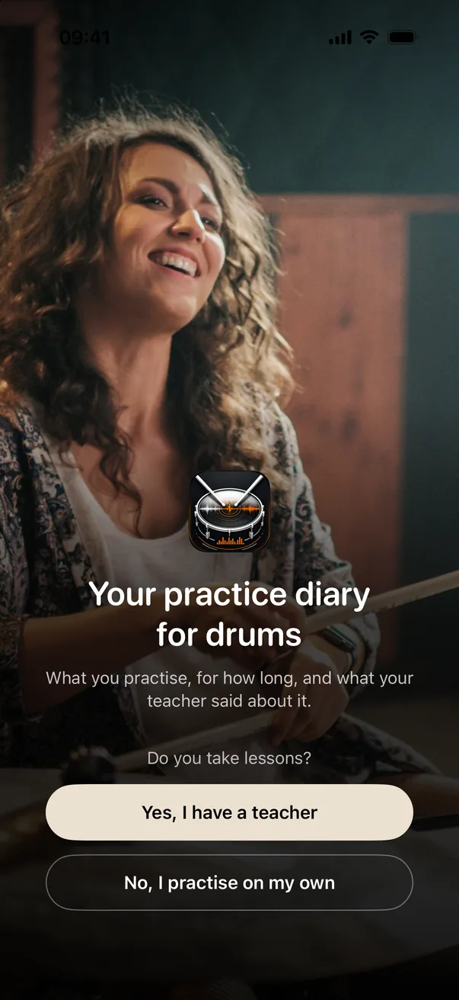
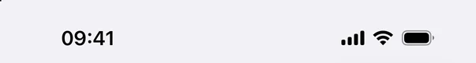
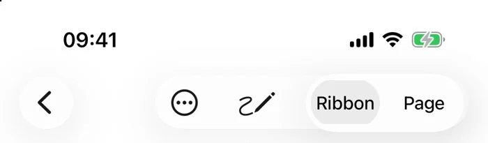
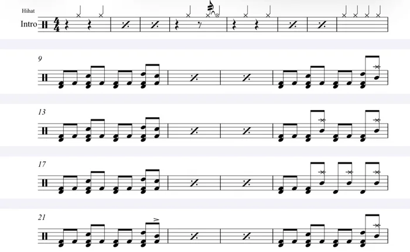

Back to the home page
Try it in your browser
Try Drumbook without installing anything.
Five short stops, from the first start to the report for your teacher. Turn the sound on: in the session and on the sheet music, the click plays so you can play along.


Session
Single Stroke Roll
Alternating right, left, right, left, even and equally loud. Start slowly; clean beats fast.
05:00
of 5 min planned
Total left 05:00
70BPM
Running order
Single Stroke Roll
00:00of 05:00
+ Add exercise
Wrap-up
This session
Time practised0 sec
Exercises1
Overall impression
How did it go?
What did you notice?
Session saved
Again tomorrow at 18:30?
You started your first session at 18:37. Drumbook will then remind you every day at this time.
iOS will then ask whether Drumbook may send notifications. You can change this at any time in the menu under “Reminders”.

130BPM
Bar 1
Rebuilt from real screens of the app, with sample data.
Like what you see?
Drumbook runs on iPhone and iPad. It is free while in testing, and the invitation comes by email.